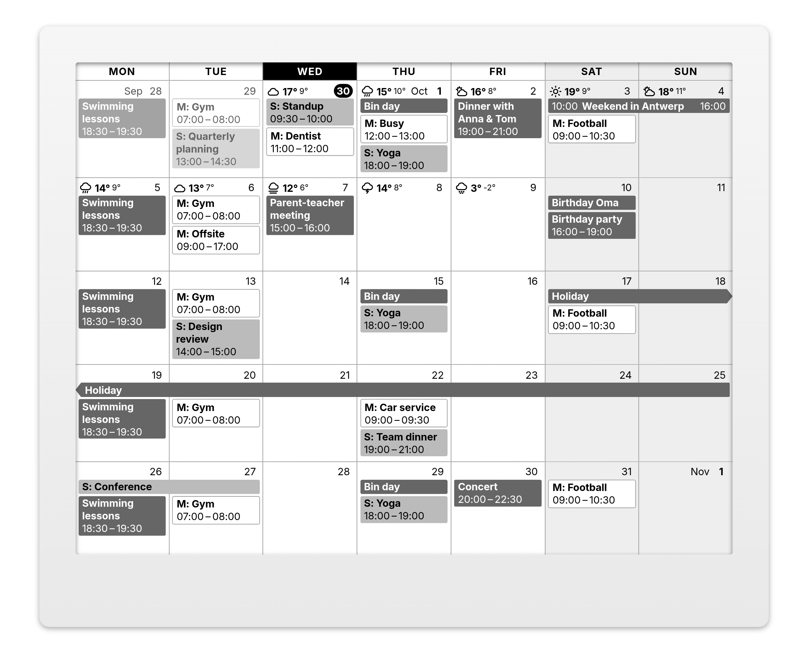

Rolling Month Calendar
for TRMNL e-ink displays
The current week and the weeks after it in one grid, from TRMNL.com calendars, ICS feeds or Home Assistant.
The current week and the weeks after it in one grid, from TRMNL.com calendars, ICS feeds or Home Assistant.
